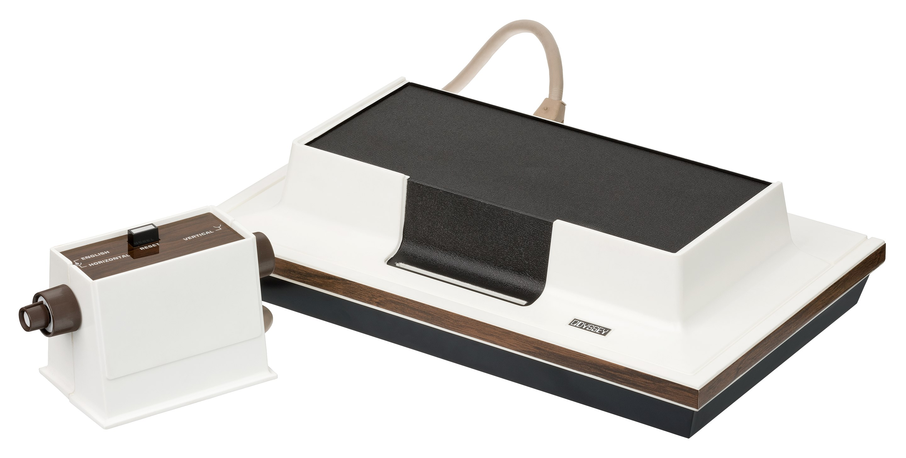
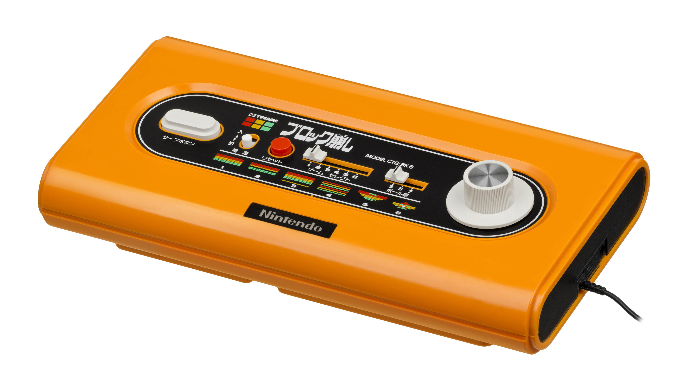
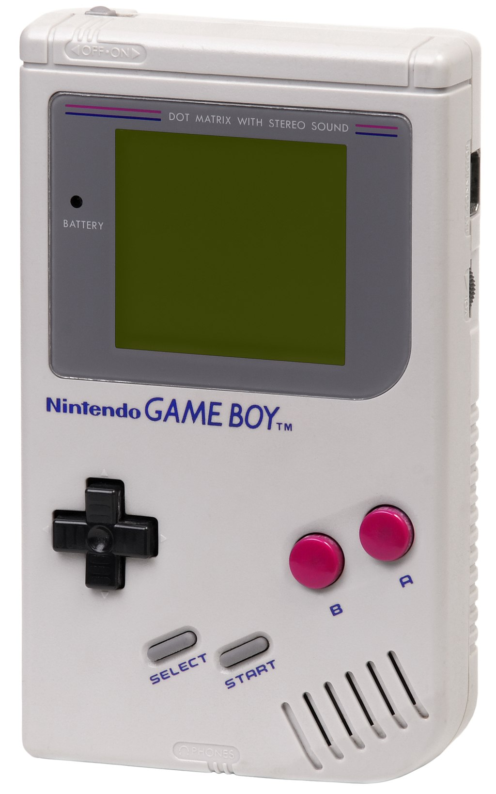
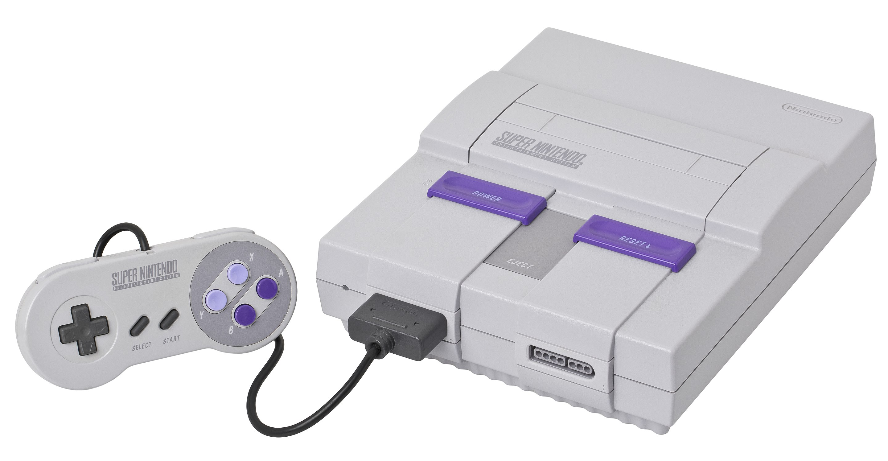

During this time period, Nintendo had started to move away from making toys to souly producing video and electronic games.
In the year 1971, Nintendo had formed an alliance with the American home and electronics company,
Magnavox,
to help in the production and development of optoelectronic guns for Magnavox's video game system,
the "Odyssey" (released in 1972).

The Magnavox Odyssey
Nintendo Consoles
Colour TV-Game System (1977 - 1980)
After the success of the Odyssey in North America, Nintendo had started to see the potential of video games and hardware production overall and began to explore the market, first starting in the mid-1970s.
During this time, Mitsubishi Electronic had proposed a joint development agreement to develop Nintendo's first system, the "Colour TV Game".
The system itself was released in 1977 and came in 2 different configurations, the "Colour TV Game 6" and the "Colour TV Game 15" (The numbers representing how many games the system came with).
Over the system's lifespan, it was sold only in Japan, with the total number of units being sold at around 3 million.
After the successful run with the system, Nintendo had continued to further their development in the video game industry by starting to create arcade games (a big industry in the Americas at that time), their first being a game called, EVR Race.

Nintendo Colour TV-Game System
Game and Watch (1980 - 1991)
The "Game and Watch" was a line of handheld electronic game consoles that were designed to play one type of unique game.
This was Nintendo's first ever handeld system that to this day, has had a long-lasting effect on the design and functionality of Nintendo systems, and video game systems in general.
At the time, this system was very advanced for its form-factor.
It was able to fit in an average mens sized pant pocket and could play an almost full-fledged game.
The head-designer of this device and games, was the well-known and influencial designer, Gunpei Yokoi.
Every Game and Watch system ever produced featured a display technology called an "Ink-LCD" display with no backlit or colour.
Nowadays, this display is only commonly used in simple calculators you can find at any dollar store.
This system according to Nintendo's records, had sold 43.4 million units over its lifetime, becoming one of Nintendo's first major successes in the handheld market.
Their next target in the video game industry was the Western market home console with the NES.
Nintendo Game and Watch
Nintendo Entertainment System [NES] (1983 - 2003)
The "Nintendo Entertainment System (NES)", (otherwise know as the Famicom System in Japan) was Nintendo's first soirée into the Western home video game market in the mid-1980s, during a time of video game uninterest and uncertainty in the West.
This was later known in history as the "Video Game Crash of 1983".
During the development phase of the NES in 1982, Nintendo had developed a prototype system, dubbed the "Advanced Video System (AVS)".
This system had similar controllers to what the NES was being sold with when released,
and had accessories such as a tape drive, joystick, and a lightgun.
Only one of the three accessories stated (the lightgun) was sold with the final product.
The system's software features were also more open - being able to use the system like a computer with the firmware installed (just like with many of the other systems at the time).
Once the system was ready for release, Nintendo had to change some of the naming and marketing properties of the system for Western consumers due to the video game crash, as stated previously.
That meant that Nintendo had to focus more on branding the system as a toy and pricing it as such so the large brick and mortor stores would buy their stock.
This was due to companies in the West not wanting to associate their product being sold as a video game or something of that sort due to the condition of the market at the time.
Though it took a massive effort on Nintendo's part, they finally got their system successfully on the market in 1986, but before fully releasing it nationally, they had done some localization sales, where the system was only sold in certain parts of the US for example.
Due to the frequent advertisements of the system, greatly reviewed games from Japan like Super Mario and The Legend of Zelda that were soon going to be localized for the West, the NES quickly became a huge success in both Japan and in the West for Nintendo.
In-fact, it was so successful, Nintendo did not end support of the system all the way until 2003!
But all good things must come to an end, and the system after 5 - 6 years, was starting to show its age poorly when in comparison to the newer systems the competition was releasing for the next generation.
So Nintendo's next big move for both their handheld and home consoles was to one-up the competition in power and usablilty, but while running with a similar formula that had gotten them to the success story they have had with the NES.
The Nintendo Entertainment System
Nintendo Game Boy [GB] (1989 - 2003)
In 1989, after the success of the Game and Watch in Japan, Nintendo had decided that it was time to move on.
The system that would be the successor to the Game and Watch, was the Nintendo "Game Boy".
The Game Boy used an LCD technology in the system that for the time, was very high-tech for what it could do and due to the system's size.
It was able to freely display any type of images on the available screen space, therefore making it able to play multiple games and have more than one use, unlike the Game and Watch.
Although the Game Boy was not as powerful as its competitor's systems, Nintendo had sold it on two key points - battery life and games.
The device was able to last a lot longer in comparison to the other handheld devices due to Nintendo using a cheaper, less power-hungry display.
The system first launched along-side what is now a cult-classic game, "Tetris" and was able to be played for more than 3 hours in most cases, unlike the competitor's systems which were usually about an hour of play.
Due to the system's great durability, cost, and whole assortment of games of many genres, the Game Boy became another major success for Nintendo in the hardware sector of the gaming market, amassing a total sale of 188 million units throughout the system's lifespan (this includes the other Game Boy hardware releases).
The system itself too became a big family of systems, which included Game Boy systems such as the Game Boy Colour, Game Boy Advance, and more.
An interesting little tid-bit about these systems is that they were supported all the up until 2003, just like the NES!

Nintendo Game Boy
Super Nintendo Entertainment System (1990 – 2003)
Following the success of the NES, Nintendo was looking into jumping to the 16-bit era of CPU architecture for their next system just like their competition, but had decided otherwise due to the still high demand for the NES.
During this time instead, Nintendo was actually planning to out-pace the competition in a matter of years with their new 32-bit architecture system that would be able to proccess more than twice as much data as the other systems on the markets.
The "Super Nintendo Entertainment System" (dubbed the Super Famicom in Japan) was to be the successor to the Nintendo Entertainment System in every way possible at the time.
The controller of the system was improved, the design was improved, and overall reliability was improved, but it had kept the original formula that got the NES to be so successful, great quality games, both at launch and through its lifespan.
The system itself was released in Japan on November 21st, 1990 to quite high demand (selling 1.6 million units by June 1991) and sold in August, 1991 in the Americas.
Though the SNES had major success in Japan and was dominating that market, it was not having as much of an easy time in the West in comparison to the previous generation system, but was still overall successful for Nintendo to want to continue making home consoles.
Their philosophy for the what was soon going to be the N64, was to continue to make a console more powerful than the competition.
A quick fun fact about development of this system is that it had helped cause the creation of one of Nintendo's biggest competitors, Sony.
This was due to the CD add-on that Nintendo and Sony were developing together (to read on this more, click HERE).

Super Nintendo Entertainment System
Nintendo 64 (1996 - 2002)
After the still quite successful run with the SNES, Nintendo was facing a dilemma; the competition was relesing new consoles with a higher-bit architecture (32-bit at this point), while they still had no plans for that sort of system.
And with Sony joining the "Console Wars" as it was known, with their hard-line marketing for their system, the "PlayStation", Nintendo and Sega's (the big two at the time) market share started to drop, and quickly.
So what was Nintendo's plan to compete with the PlayStation? Develop a new console that again, was the most powerful in comparison to its competition.
In 1993, Nintendo had announced plans to develop and create a new beast of a game console for that time, that being a 64-bit capable system which was capable of rendering full 3D environments and character models (most home computers at that time were still 32-bit and had trouble rendering 3D models in most cases) to compete against the PlayStation.
This system was codenamed, Project Reality - later changed to Ultra 64 about a year later.
In 1996, the system was officially unveiled with a new name, the "Nintendo 64 (N64)", and on June 23, was officially released in Japan with over 500,000 units being sold in the first day.
The system was then released in North America on September 29th, 1996, selling out of the initial shipment of 350,000 units.
Although the N64 was a very powerful system at an affortable price, it did not sell as well as Nintendo's previous systems.
Some believe that it was due to Sony's PlayStation ads that were very common to see on TV at the time in comparison to Nintendo's.
Others believe that the sales were affected by the available games on the system that were on other consoles, causing consumers to buy the competition's consoles instead of their's.
Another guaranteed reason for why the system did not sell to well, was game exclusivity to that system.
This was due in part to the cost of producing games on a cartridge in comparison to a CD being more expensive.
The N64 was one of the only consoles of that generation that was still using a cartridge media that required a fee to be payed by the developer for them to use it, while consoles like the aforementioned PlayStation, were using a fee-free based CD media, which was overall cheaper to produce games on, especially games with larger file sizes (though the cartridge media had faster read times compared to CDs).
Nintendo later in the lifespan of the console tried to release a proprietary disk reading add-on, called the "Nintendo 64DD", which would add additional storage to existing games and a new storage medium for the N64 system, that being disc-based.
It was first released in Japan, but due to poor sales and utilisation of the hardware, it never made it to North America.
The N64 itself was designed to be very modular, with many different ports for different products to be utilised for the system.
One add-on was the N64 expansion pack, which gave the system even more available RAM for larger games to run on the system. It was used a good amount during the lifespan of the system.
Overall the N64 was not a major success or flop, introducing some very revolutionary games that changed how video games are developed, but had caused some of Nintendo's loyal 3rd party developers to abandon ship due to the expense of making games on that system.
For the next generation, Nintendo's focus was to again, make another powerful console that would be easy for developers to produce games on by using a DVD-type media to go against Sony's next system, which was a major threat to them at that point.
Nintendo 64
Game Boy Color (1998 – 2003)
The original Nintendo Game Boy at this point was getting very old and out of date with technology.
The original Game Boy's display was monochrome came with no backlight for it to be used in the dark.
The "Game Boy Color" when released came with a colour display but surprisingly not come a backlit too.
The handheld was released on October 13, 1998 in Japan and a month later in North America and Europe.
Not much else is really known about the system due to it only being an incremental upgrade over the original Game Boy and not much more.
Game Boy Color
Game Boy Advance [GBA] (2001 - 2008)
The sequal to the original set of Game Boys, the "Game Boy Advance" was an improvement in almost every way.
Where the original set of Game Boys had no colour display, this one did.
Where the original set of Game Boys were reaching their limit in proccessing power later on in life, the GBA improved on the power of its chip (being of 32-bit architecture compared to the previous 16-bit architecture).
Where the original set of Game Boys had no backlight, the GBA partly had.
This was due in part to the original GBAs not having a backlight until 2 years later with the version 1.5 of this system, the "Game Boy Advance SP (GPASP)" was released.
The GBA itself was released on March 21st, 2001 in Japan, and 2 months later in the rest of the world.
The GBASP on the other hand was released 2 years after the original (in 2003).
Game Boy Advance
Game Boy Advance SP
Nintendo GameCube (2001 - 2007)
After a somewhat successful previous generation console, Nintendo was hoping for big changes to come to get back to the top.
They would try to reach that goal by again, making a very powerful system that outpaces the competition and would be a little easier to develop game for by using a DVD-based media.
This is all due in part to the N64 having a cartridge media that was smaller in storage size and was more expensive to produce in bulk, causing 3rd-party developers to leave support of the console.
During development of the new console, it was known as codename, Dolphin (which was the processor's model name).
Speaking of processing power, the codenamed, Dolphin console ran on a PowerPc based processor from IBM with ATI dedicated graphics.
This system was able to theoretically output a signal at 480p, which was not very common at the time (360p was most common on tv's of that time).
When it came to games and how they were going to be stored, there was only 1 way, and it did not please many developers.
The system would use Mini-DVDs as its storage medium, though larger-sized DVDs would have allowed them to store more data onto a single disc (about 2 times as much).
When reveal day came for the system, Nintendo had offically unveiled the name and design.
It was known as the "Nintendo GameCube (GCN).
It was a very uniquely designed console that was small, compact, and had a handle at the back for carrying around.
The developers of the hardware said they had left it there as a cool design quirk and so when people would have a LAN party with certain games that supported that feature, it would be easier to carry there.
The system was then released on September 14th, 2001 in Japan November in North America, and in the EU and Australia a few months later.
Compared to its competition, the system was still very powerful, but just did not have enough 3rd party support from developers due to the media-storage size of their games not being able to fit on Mini-DVDs easily, and with Sony's "PlayStation 2" already released and selling like hot-cakes, it was already hard enough for Nintendo to find an install base of consumers.
To add fuel to the fire, Microsoft, one of the largest companies at the time, had created the "XBOX" with some very good games and had decided to join in on the console wars.
They had managed to shake up the market hard enough that Sega decided to stop making consoles all together after 2001 due to poor sales.
Overall, the GameCube was the third highest selling console in the wars (out of 4), at 21.75 million units sold, but when compared to the sales of their previous genration consoles and their competition, that was nothing (Sony sold over 100 million PlayStation 2s that generation).
It was a major loss to Nintendo, losing most of the big 3rd party developers and underselling their previous generation console which even that one undersold the one previously.
It had shown to the industry that Nintendo was not always perfect or unbeatable in the console wars.
To gain back that support, they had to be bold, not just follow the same old formula that got them here in the first place.
They needed a revolutionary device!
Nintendo GameCube
Nintendo DS, DS Lite & DSi (2004 - 2013)
In May of 2004, Nintendo was planning something big with portable gaming.
They had been talking about plans to release a new brand new handheld that was unrelated to the Game Boy, that would feature two screens, one of which was touch-senitive.
The Nintendo "DS" was then released on November 21st, 2004, and received over three million pre-orders.
Another feature for the DS that was new to Nintendo Handhelds was being able to render 3D graphics, similar to those of the Nintendo 64.
Throughout the lifetime of the system, it went through many different design and feature changes, some good, some bad.
The DS family overall was a major success for the company, selling over 150 million units.
Nintendo DS (Lite Variant)
Nintendo Wii (2006 - 2017)
The Nintendo "Wii" was Nintendo's answer to a revolutionary new system that goes against the formula.
The new system was mentioned in E3 of 2004 about being a system that will change the way you play games - codenamed Revolution.
It was then officially unveiled in E3, 2006 as the Nintendo Wii.
The system was less powerful than its competitors but held one key feature up its sleeve that the rest tried to copy later.
That one key feature was the motion control ability of the controllers.
The WiiMotes as they were known, were the magic wands that could do many things. It could be used sideways as an NES-like controller for platformer games like Mario Bros., or you could attach a joystick to the remote and play many 3D games with motion control included.
Nintendo had also tried to make this system appealing to the casual market by making the name easy to remember in any language due to its simple spelling, and with the release of many motion-fitness and more casual-like games that would appeal to that group of people.
The plan and marketing had worked like a charm this generation for Nintendo when it came to sales of the Wii, but the more gamer-like audience was not very appealed by it and so too were bigger 3rd party developers.
There were many reasons for this, one being that the system was just not powerful enough for most Triple-A games, which the more gamer-like audience prefers, thus causing them to buy other systems that actually had those types of games.
The system's overall sales perfomance was still amazing, selling more than 101 million units in its lifetime through 3 different iterations of the system.
Nintendo Wii
3DS, 3DS XL, 2DS, etc. (2011 - Present)
The Nintendo "3DS" was the successor to the DS family where all the features from the DS were taken and turned up to 11.
They also had introduced a new and interesting feature, glasses-free stereo-scopic 3D (you could see the images in 3D without special glasses).
The feature was not well utilised in 3DS games but it was very intriguing of a feature non-the-less.
The system was officially unveiled at E3, 2010 and was released on February 26th, 2011 in Japan, and a month later in North America and Europe.
Although the system had a rough start due to the high price and lack of good games, the system managed to re-gain control once the price was lowered, better games were released, and improved models were released.
In the end, the system was very successful, selling 75.08 million units through all of the available models.
There is currently no known next-generation portable that will succeed the 3DS.
Nintendo 3DS
Nintendo Wii U (2012 - 2017)
At E3 2011, Nintendo had decided that it was time to unveil a brand new system to be the direct successsor to the Nintendo Wii.
Now if you were keeping an eye on the new systems Nintendo was releasing, like the 3DS for example, you would seem to notice that they have similar names to their direct predecessors (that being the DS in this case), and it was not unintentional.
Nintendo was riding high on both the success of the Nintendo DS and Wii which at that time, both systems had reached a total of over 100 million units sold respectively.
They were Nintendo's best selling systems of all time, and still are to this day.
The company had thought that because the DS and Wii names are so synonymous with success in the market, good games and attracts the casual and gaming market to those systems, they thought that to continue to be successful, they should use the same design philosophy and similar naming scheme but kick it up to 11.
The preformance, online features and design were to be way better than that of their predecessors and more thought out.
It was a little rough for the 3DS at first, with sales not going to well for the system, but after price cuts and better games were released on the market, things started to turn around.
The same were to happen to the new home console if Nintendo were to not recognize and fix their mistakes to what happened to the 3DS.
Unfortunately the system would suffer the same beginning fate and not recover.
Now back to the E3 2011 announcement of the new system.
Nintendo had officially unveiled the new system as the Nintendo "Wii U".
The system itself was still in beta at the time but had kept the core running feature of the system throughout its development time until release.
That main feature was the Wii U GamePad, as it was called.
This device was mix between a standard controller with motion controls, speakers, the works, but the main feature of this device was its screen that was touch sensitive.
The people that had seen the device and used it hands on had said that it looked similar to a tablet with that 6.2 inch touchscreen.
Developers had really liked this system at first due to the second screen that was on the GamePad, and gamers had liked the new system for finally catching up with the times, (being able to play games in full HD, a feature standard on the XBOX 360 and PlayStation 3 from last generation) while still introducing new innovations to the market to how games will be played.
The system had used a similar but overclocked CPU to the Wii, which had used a similar one that was also overclocked to the GameCube, a system which at that time had just turned 10 years old.
This is where all the troubles started to arise for the system that caused its downfall.
Once the Wii U was finalized in terms of design, people started to get mixed up about this new system.
If you were to put the Wii U and Wii console beside eachother, with the untrained eye, you would not be able to easily tell them apart.
That's how some people closer to the system's release date had thought that the GamePad was an add-on for the Wii due to how similar it looked and how the name sounded.
This was again due to Nintendo's new philosophy in design and naming at the time.
To add insult to injury, the system's raw performence was being undercut for developers both due to the last generation hardware not holding up to well to modern games, and because of the Wii U GamePad, which according to some developers, would take almost half the system's available hardware resources.
And because the GamePad did not come with its own integrated hardware, it had to souly rely on the home console portion of the system for communications and game feed.
You could not walk away from the system with just the GamePad over 30 ft., and the GamePad itself only had a 2-4 hour usage time before its battery died.
This was due the expensiveness of producing the system in bulk, causing Nintendo to cut some corners in the production of the system.
Over time, developers had started to abandon the system long before it even really launched, and with the new XBOX and PlayStation coming out soon with rumors syaing that the systems were to be 3 times more powerful than the Wii U, things were not looking good at all.
Even with all of these troubles, Nintendo still decided to release the new system.
It was finally released on November 18th, 2012 in North America, and a month later for Japan and Europe.
The system was selling really well initially but started to slump badly after a few months due to a poor selection of games.
After 5 years of being on sale, Nintendo could only move 13.6 million Wii U units, causing it to be the worst selling console for Nintendo and second-worst ever in the industry.
It had caused Nintendo to lose billions of dollars in potential revenue and many more 3rd party developers.
Some were seriously thinking that this was going to be Nintendo's final home console, where they would pull out after this generation was over.
Some had said that if they did not, and made a new console again, that it would cause the company to go bankrupt.
Both assumptions were quite outlandish and still have never happened, even though the Wii U was killed off.
For Nintendo's big comeback, they had to take a big risk, that may change the fate of gaming or the fate of the company itself.
They had to show their individual uniqueness again, and again they did.
Nintendo Wii U (White Variant)
Nintendo Switch (2017 - Present)
After the abhorrent failure of the Wii U for Nintendo, they had to go back to the drawing board with a new idea for a system, something that has never been done before by a major gaming company.
They had decided in 2014 to develop a system that was both a portable and home console device that could seamlessly play any home console games on the go, with good to great battery life and design.
The codename for this prject was NX (some speculating that it means Nintendo Xperience or Nintendo X, like Xtreme).
It was later revealed not in an E3 confrence or at an investors meeting like most companies do, but instead through a YouTube video, released on October 20th, 2016.
The name of the system was offically revealed as the "Nintendo Switch".
It was a system that as I had stated previously, could play home console games with little issues on the go.
The hardware itself was not even that cutting edge.
It still was not as powerful as even the base PlayStation 4 from 2013, and did not even compete with its 4K gaming brother, the PlayStation 4 Pro.
So how were they able to port these triple-A games over to the system?
By using a new CPU architecture that was never used on a major gaming device before.
I am talking about an ARM-based processor, otherwise known as a System on Chip (SoC) that is usually used on smartphones due to their size and available space within the device.
This made the system more energy efficient but powerful enough to run current generation games, although at a lower resolution and sometimes framerate.
The system itself was released on March 3, 2017 to major demand (enoungh that pre-orders sold out in 10 minutes according to some analysts, with day one shipments out of stock in a few days after release).
The system had instantly became a major success for the company, outselling the Wii U's lifetime sales in less than a year.
This was due to the spectacularly reviewed and rewarded game that came out on launch day, the Legend of Zelda, Breath of the Wild, with more major first party releases like, Super Mario Odyssey following a few months later (which were also highly revered).
Another reason could be due to the 3rd party developers coming back in droves, releasing their major games on the system that could be played on the go, which was never done before.
That is a whole reason in itself; the market was waiting for a system like this and Nintendo delivered like no other company could.
They were and still are the only company at this time with a home and handheld console 2-in-1 (there is nothing like it) that could play home console games with little caveats.
Since the console's release, the Nintendo Switch has sold over 36 million units worldwide, and with the continuing success of the system, Nintendo has no interest in stopping now.
There are currently no plans to replace the system other than creating a more powerful version of the system and a lower spec tier system (a.k.a, the Nintendo Switch Lite) to capitalize on the success of the system and its potential.
Nintendo Switch with Neon JoyCon
-- To view more information on the specific eras and famous game series Nintendo is known for, click on one of the many navigation links on the top of your screen.
-- To view the references and resources for this website, click the 'References' button in the navigation bar to the top right of your screen.

.jpg)


.png)